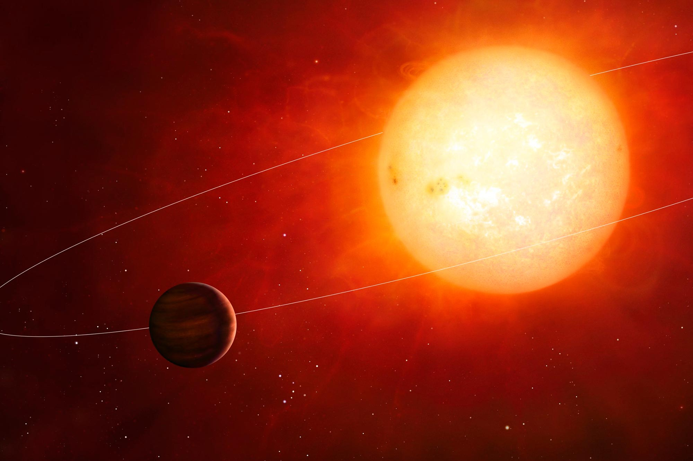
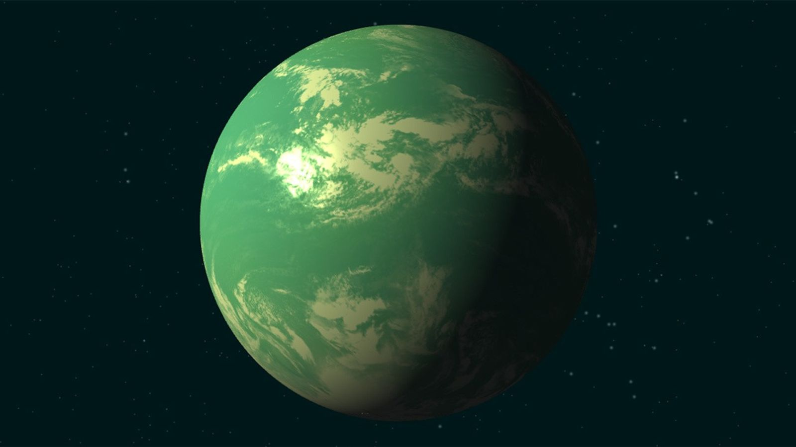

| Exoplanet | Key Characteristic |
|---|---|
| Kepler-22b | The first planet discovered by the Kepler telescope orbiting within the habitable zone of a Sun-like star. |
| TRAPPIST-1e | Part of an amazing system with 7 Earth-sized planets. TRAPPIST-1e is considered one of the most potentially habitable worlds found. |
| Proxima Centauri b | The closest known exoplanet to Earth, located just 4.2 light-years away, orbiting the star nearest to our Sun. |